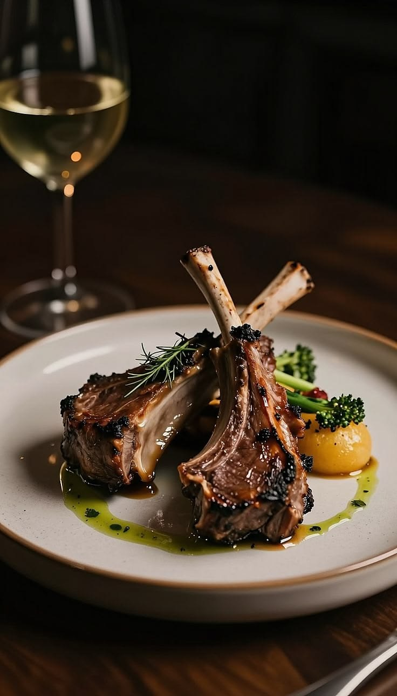

"A kitchen is only as good as the fire underneath it."

Coalhouse opened in 2014 with one wood-fired oven and a simple idea: nothing leaves the kitchen that hasn't touched real fire. A decade on, that's still the whole recipe — burgers charred over oak, vegetables blistered until they're sweet, bread pulled straight from the coals.
No shortcuts, no smoke machines. Just good food, cooked slow, meant for sharing around a table that's a little too small for how many people show up.